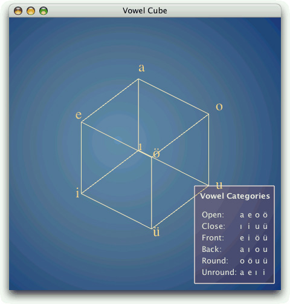

|
|
In the preceding section, we saw how to use OpenGL commands to draw a 3D scene on a QGLWidget. It is also possible to use QPainter to draw 2D graphics on a QGLWidget. The Vowel Cube example we will look at in this section combines OpenGL calls and QPainter, showing how to get the best of both worlds. It also demonstrates the use of the QGLWidget::renderText() function, which lets us draw untransformed textual annotations on top of a 3D scene. The application is shown in Figure 20.2.

Vowel Cube shows a window with the eight vowels of the Turkish language as a cube—an image frequently seen in Turkish grammars and linguistics books. In the foreground, a legend lists the vowel categories and which vowels belong in which category. The cube makes this information more visual; for example, front vowels are shown in the front of the cube, and back vowels are at the back. For the background, we use a radial gradient.
class VowelCube : public QGLWidget
{
Q_OBJECT
public:
VowelCube(QWidget *parent = 0);
~VowelCube();
protected:
void paintEvent(QPaintEvent *event);
void mousePressEvent(QMouseEvent *event);
void mouseMoveEvent(QMouseEvent *event);
void wheelEvent(QWheelEvent *event);
private:
void createGradient();
void createGLObject();
void drawBackground(QPainter *painter);
void drawCube();
void drawLegend(QPainter *painter);
GLuint glObject;
QRadialGradient gradient;
GLfloat rotationX;
GLfloat rotationY;
GLfloat rotationZ;
GLfloat scaling;
QPoint lastPos;
};
The VowelCube class is derived from QGLWidget. It uses QPainter to draw the background gradient, then it draws the cube using OpenGL calls, then it draws the eight vowels at the corners of the cube using renderText(), and finally it draws the legend using QPainter and QTextDocument. The user can rotate the cube by pressing a mouse button and dragging, and zoom in or out using the mouse wheel.
Unlike in the preceding section's Tetrahedron example, where we reimplemented the high-level QGLWidget functions initializeGL(), resizeGL(), and paintGL(), this time we reimplement the traditional QWidget handlers. This gives us more control over how we update the OpenGL framebuffer.
Here's the VowelCube constructor:
VowelCube::VowelCube(QWidget *parent)
: QGLWidget(parent)
{
setFormat(QGLFormat(QGL::SampleBuffers));
rotationX = -38.0;
rotationY = -58.0;
rotationZ = 0.0;
scaling = 1.0;
createGradient();
createGLObject();
}
In the constructor, we start by calling QGLWidget::setFormat() to specify an OpenGL display context that supports antialiasing. Then we initialize the class's private variables. At the end, we call createGradient() to set up the QRadialGradient used to fill the background, and createGLObject() to create the OpenGL cube object. By doing all of this in the constructor, we obtain snappier results later on, when we need to redraw the scene.
void VowelCube::createGradient()
{
gradient.setCoordinateMode(QGradient::ObjectBoundingMode);
gradient.setCenter(0.45, 0.50);
gradient.setFocalPoint(0.40, 0.45);
gradient.setColorAt(0.0, QColor(105, 146, 182));
gradient.setColorAt(0.4, QColor(81, 113, 150));
gradient.setColorAt(0.8, QColor(16, 56, 121));
}
In createGradient(), we simply set up the QRadialGradient to use different shades of blue. The call to setCoordinateMode() ensures that the coordinates specified for the center and focal points are adjusted to the size of the widget. The positions are specified as floating-point values between 0 and 1, where 0 corresponds to the focal point and 1 corresponds to the outline of the circle defined by the gradient.
void VowelCube::createGLObject()
{
makeCurrent();
glShadeModel(GL_FLAT);
glObject = glGenLists(1);
glNewList(glObject, GL_COMPILE);
qglColor(QColor(255, 239, 191));
glLineWidth(1.0);
glBegin(GL_LINES);
glVertex3f(+1.0, +1.0, -1.0);
...
glVertex3f(-1.0, +1.0, +1.0);
glEnd();
glEndList();
}
The createGLObject() creates an OpenGL list that stores the drawing of the lines that represent the vowel cube. The code is all standard OpenGL code, except for the QGLWidget::makeCurrent() call at the beginning, which ensures that we use the correct OpenGL context.
VowelCube::~VowelCube()
{
makeCurrent();
glDeleteLists(glObject, 1);
}
In the destructor, we call glDeleteLists() to delete the OpenGL cube object that we created in the constructor. Again, we must call makeCurrent().
void VowelCube::paintEvent(QPaintEvent * /* event */)
{
QPainter painter(this);
drawBackground(&painter);
drawCube();
drawLegend(&painter);
}
In the paintEvent(), we set up a QPainter as we would normally do for a plain QWidget; then we draw the background, the cube, and the legend.
void VowelCube::drawBackground(QPainter *painter)
{
painter->setPen(Qt::NoPen);
painter->setBrush(gradient);
painter->drawRect(rect());
}
Drawing the background is simply a matter of calling drawRect() with an appropriate brush.
The drawCube() function is the heart of the custom widget. We'll review it in two parts:
void VowelCube::drawCube()
{
glPushAttrib(GL_ALL_ATTRIB_BITS);
glMatrixMode(GL_PROJECTION);
glPushMatrix();
glLoadIdentity();
GLfloat x = 3.0 * GLfloat(width()) / height();
glOrtho(-x, +x, -3.0, +3.0, 4.0, 15.0);
glMatrixMode(GL_MODELVIEW);
glPushMatrix();
glLoadIdentity();
glTranslatef(0.0, 0.0, -10.0);
glScalef(scaling, scaling, scaling);
glRotatef(rotationX, 1.0, 0.0, 0.0);
glRotatef(rotationY, 0.0, 1.0, 0.0);
glRotatef(rotationZ, 0.0, 0.0, 1.0);
glEnable(GL_MULTISAMPLE);
Because we have some OpenGL code between two pieces of code that use QPainter, we must be careful—specifically, we must save the OpenGL state that we change in the function and restore it after we are done. So we save the OpenGL attributes, the projection matrix, and the model view matrix before we change them. At the end, we set the GL_MULTISAMPLE option to enable antialiasing.
glCallList(glObject);
setFont(QFont("Times", 24));
qglColor(QColor(255, 223, 127));
renderText(+1.1, +1.1, +1.1, QChar('a'));
renderText(-1.1, +1.1, +1.1, QChar('e'));
renderText(+1.1, +1.1, -1.1, QChar('o'));
renderText(-1.1, +1.1, -1.1, QChar(0x00F6));
renderText(+1.1, -1.1, +1.1, QChar(0x0131));
renderText(-1.1, -1.1, +1.1, QChar('i'));
renderText(+1.1, -1.1, -1.1, QChar('u'));
renderText(-1.1, -1.1, -1.1, QChar(0x00FC));
glMatrixMode(GL_MODELVIEW);
glPopMatrix();
glMatrixMode(GL_PROJECTION);
glPopMatrix();
glPopAttrib();
}
Next, we call glCallList() to draw the cube object. Then we set the font and color, and call QGLWidget::renderText() to draw the vowels at the corners of the cube. The Turkish vowels that fall outside the ASCII character range are specified using their Unicode value.
The renderText() function takes an (x, y, z) coordinate triple to position the text in model view coordinates. The text itself is not transformed.
void VowelCube::drawLegend(QPainter *painter)
{
const int Margin = 11;
const int Padding = 6;
QTextDocument textDocument;
textDocument.setDefaultStyleSheet("* { color: #FFEFEF }");
textDocument.setHtml("<h4 align=\"center\">Vowel Categories</h4>"
"<p align=\"center\"><table width=\"100%\">"
"<tr><td>Open:<td>a<td>e<td>o<td>ö"
...
"</table>");
textDocument.setTextWidth(textDocument.size().width());
QRect rect(QPoint(0, 0), textDocument.size().toSize()
+ QSize(2 * Padding, 2 * Padding));
painter->translate(width() - rect.width() - Margin,
height() - rect.height() - Margin);
painter->setPen(QColor(255, 239, 239));
painter->setBrush(QColor(255, 0, 0, 31));
painter->drawRect(rect);
painter->translate(Padding, Padding);
textDocument.drawContents(painter);
}
In drawLegend(), we set up a QTextDocument object with some HTML text that lists the Turkish vowel categories and vowels, and we render it on top of a semi-transparent blue rectangle.
The VowelCube widget also reimplements mousePressEvent(), mouseMoveEvent(), and wheelEvent(), but there is nothing special about these. Like in a standard Qt custom widget, we call update() whenever we want to schedule a repaint. For example, here is the code for wheelEvent():
void VowelCube::wheelEvent(QWheelEvent *event)
{
double numDegrees = -event->delta() / 8.0;
double numSteps = numDegrees / 15.0;
scaling *= std::pow(1.125, numSteps);
update();
}
This completes our review of the example. In the VowelCube's paintEvent() handler reimplementation, we used the following general pattern:
|
1.
|
Create a QPainter.
|
|
2.
|
Use the QPainter to draw the
background.
|
|
3.
|
Save the OpenGL state.
|
|
4.
|
Draw the scene using OpenGL operations.
|
|
5.
|
Restore the OpenGL state.
|
|
6.
|
Use the QPainter to draw the
foreground.
|
|
7.
|
Destroy the QPainter.
|
There are other possibilities. For example, if we don't draw a background, we could do this:
|
1.
|
Draw the scene using OpenGL operations.
|
|
2.
|
Create a QPainter.
|
|
3.
|
Use the QPainter to draw the
foreground.
|
|
4.
|
Destroy the QPainter.
|
This corresponds to the following code:
void VowelCube::paintEvent(QPaintEvent * /* event */)
{
drawCube();
drawLegend();
}
void VowelCube::drawCube()
{
...
}
void VowelCube::drawLegend()
{
QPainter painter(this);
...
}
Notice that this time, we create the QPainter object locally in drawLegend(). The main advantage of this approach is that we don't need to save and restore the OpenGL state. However, out of the box, this won't work, because QPainter automatically clears the background before it starts painting, overwriting the OpenGL scene. To prevent that, we must call setAutoFillBackground(false) in the widget's constructor.
Another interesting pattern occurs if we draw a background and a cube, but no foreground:
|
1.
|
Create a QPainter.
|
|
2.
|
Use the QPainter to draw the
background.
|
|
3.
|
Destroy the QPainter.
|
|
4.
|
Draw the scene using OpenGL operations.
|
Again, we can avoid saving and restoring the OpenGL state. However, this won't work as is, because QPainter automatically calls QGLWidget::swapBuffers() in its destructor to make the result of drawing visible, and any OpenGL calls that occur after the QPainter destructor will go to the off-screen buffer and won't show up on-screen. To prevent that, we must call setAutoBufferSwap(false) in the widget's constructor and call swapBuffer() at the end of paintEvent(). For example:
void VowelCube::paintEvent(QPaintEvent * /* event */)
{
drawBackground();
drawCube();
swapBuffers();
}
void VowelCube::drawBackground()
{
QPainter painter(this);
...
}
void VowelCube::drawCube()
{
...
}
In summary, the most general approach is to create a QPainter in paintEvent() and to save and restore the state whenever we perform raw OpenGL operations. It is possible to avoid some state saving, provided we keep in mind the following points:
QPainter's constructor (or QPainter::begin()) automatically calls glClear() unless we called setAutoFillBackground(false) on the widget beforehand.
QPainter's destructor (or QPainter::end()) automatically calls QGLWidget::swapBuffers() to swap the visible buffer and the off-screen buffer unless we call setAutoBufferSwap(false) on the widget beforehand.
While QPainter is active, we can interleave raw OpenGL commands, as long as we save the OpenGL state before issuing raw OpenGL commands and restore the OpenGL state afterward.
With these points it mind, combining OpenGL and QPainter is straightforward and gives us the best of QPainter's and OpenGL's graphics capabilities.
|
|
| Converted from CHM to HTML with chm2web Pro 2.85 (unicode) |